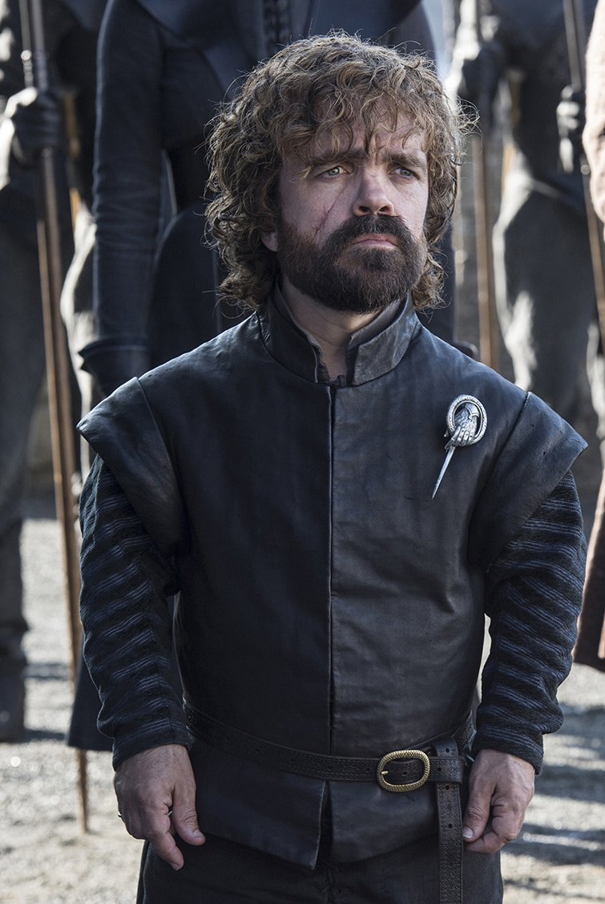

Game of Thrones Fun Page
Tyrion Lannister

Тирион Ланнистер
(Tyrion Lannister) - Младший сын Тайвина Ланнистера. Является одним из самых умных персонажей сериала и занимает различные высокие посты.
К концу сериала живой.
Видео с персонажем
На основной сайт